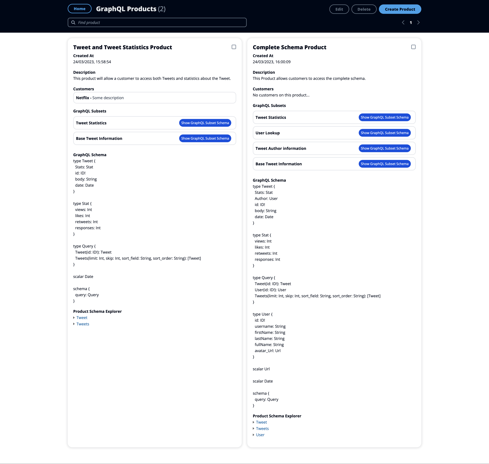
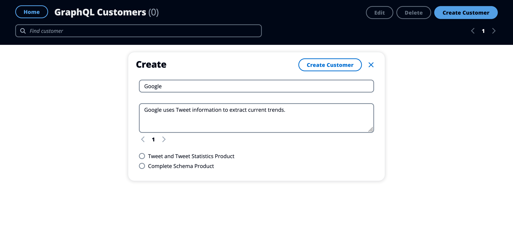

GraphQL Product Builder
The GraphQL Product Builder allows for bespoke GraphQL schemas to be generated.
Background
What is GraphQL
GraphQL is a query language built on top of a well defined schema. The schema defines all of the queries, mutations and subscriptions a client can make to a server. The schema is the contract that binds the client and the server. With GraphQL you specify the exact data you want from the server and you get the data back in exactly that format. This reduces over-fetching and reduces the amount of data that needs to be transferred over the network.
Here's an example query for a vehicle GraphQL API:
query { vehicle(id: "f29012aa-38e1-468d-bfd4-b016f503a362") { price { amount currency } manufacturer { name country } } }
This may return data in the following format:
{ "data": { "vehicle": { "price": { "amount": 40000, "currency": "gbp" }, "manufacturer": { "name": "Mercedes", "country": "DE" } } } }
Monetizing your GraphQL API
Monetizing APIs is not a new concept, but monetizing GraphQL APIs is a more novel concept.
Imagine you have a GraphQL API within your organization and you want to monetize your API by enabling third parties to have enterprise access to your API. How would you do this? Well, you can setup a GraphQL endpoint, enter a contract with the 3rd party, exchange money and provide them with access to your API.
But there's one main problem with this - By exposing your whole GraphQL Endpoint, there is only one single GraphQL schema that is being given to every customer.
Think about the following business requirements:
- As an API provider, I want to expose a subset of data to customers who are paying less.
Exposing a subset of data isn't possible with a regular GraphQL endpoint. So how would you fulfill this business requirement? A GraphQL Product Builder.
What is the GraphQL Product Builder (a concrete example)
Imagine you work at a Twitter and you have a GraphQL API that provides information about tweets and Twitter users. The schema for the GraphQL API that provides the data could look like this:
type Tweet { id: ID! body: String date: Date Author: User Stats: Stat } type User { id: ID! username: String firstName: String lastName: String fullName: String avatar_Url: Url } type Stat { views: Int likes: Int retweets: Int responses: Int } scalar Url scalar Date type Query { Tweet(id: ID!): Tweet Tweets(limit: Int, skip: Int, sort_field: String, sort_order: String): [Tweet] User(id: ID!): User }
The GraphQL Product Builder will be used by two job families:
- Software Development Engineers (SDE) who are familiar with the underlying Twitter GraphQL schema.
- Sales Representatives (SR) who are selling the Twitter API to customers.
The terms of a new sale have been negotiated and the sale has just been made, so access to the API needs to be provided to the customer.
The negotiations have stated that the customer is allowed to access Tweet information including Tweet Statistics, but not data about Users (additional monetary compensation would be required for a customer to onboard with User data).
Based on this information we can onboard the customer onto the GraphQL API. But how do we do this?
Step 1: Add the schema to the GraphQL Product Builder
Let's add the customer to the database.
Navigate to https://graphqlproductbuilder.co.uk/sourceGraphQLSchema and we can add the exhaustive schema for our GraphQL API. This

Step 2: Create the GraphQL Subsets
We need to create a GraphQL Subset. What is a GraphQL Subset? These subsets are what make up the final product. Each subset is a subset of the complete GraphQL schema. These subsets can be composed together to form a product, where the subset schemas are merged into a single schema and stored in the product.
- Navigate to https://graphqlproductbuilder.co.uk/graphQLSubsets.
- Create a new GraphQLSubset for the base tweet information
- Add a name for the GraphQL Subset
- Add a description for the GraphQL Subset
- Use the Query explorer to define the data that you want in the GraphQL Subset. This explorer visualizes the schema and you can click through the drop downs to select the kinds of queries you want the customer to be able to execute. This will generate a subset schema which you can review.
- Press Create!
- Repeat what you just did, but for the tweet statistics.
Creation of the Base Tweet GraphQL Subset

Final Page showing the GraphQL Subsets
I've added some additional subsets as an extra example.

Step 3: Creating the GraphQL Product
Now we need to create the actual product that comprises of the two GraphQL Subsets.
- Navigate to https://graphqlproductbuilder.co.uk/products
- Create a new Product
- Call it the Tweet and Statistics Product
- Add a description
- Select the correct GraphQL subsets
- Press Create!
Creation of The Tweet and Statistics Product

I've added an additional product as an extra example

Step 4: Create the customer
- Navigate to https://graphqlproductbuilder.co.uk/customers
- Create the customer
- Add the customer name
- Add the customer description
- Select the correct GraphQL product to associate with the customer
- Press Create!
Creation of the customer

Final GraphQL customer page
What happens now?
You have now uploaded the source of truth schema, you've created the underlying GraphQL Subsets, you've created the Product which is made up of the GraphQL Subsets and you've created the Customer along with the product you want them to be able to access.
This application manages the source schema, the GraphQL Subsets, the GraphQL Products and the underlying Customers, but it currently doesn't integrate with any GraphQL Gateway. The next step would be to include the customer's API key and associate it with the customer entity in the database, then the GraphQL Gateway could do a lookup from the API key to the correct GraphQL Schema for that customer.
Next steps
Dynamic schema per customer
As mentioned above, this application needs integrating with a GraphQL Gateway to allow for a dynamic schema per customer.
Locking down the application
If you want to deploy this application for your GraphQL Gateway, you will need to lock this application down to only those who need it. You can do this by:
- Creating a NextJS middleware which checks that the requesting user is logged in and is allowlisted to access the website. This is a front end check.
- Creating and using a new tRPC procedure which checks if the user is logged in and allowlisted to access the queries and mutations specified.
- Remove the demonstrative user toggle switch
Automatic schema ingestion
Whenever the underlying GraphQL schema changes, we don't want to have to manually update it. A new feature would be to allow for automatic schema ingestion. This would ensure that the GraphQL Product Builder always has the latest changes and there's no manual intervention involved.
Integration testing
Whenever you want to make a change to the GraphQL schema of a subset, I want integration testing to be performed.
GraphQL Products are made up of many GraphQL Subsets by composing their GraphQL schemas into a single schema. If I make a change to one of the GraphQL subsets, it will cause the GraphQL Products to have a different schema. I want to ensure that the new resulting GraphQL Product schema:
- Is a valid schema
Statically check it is a valid schema
This can be done by parsing the schema and checking there are no errors when parsing.
Statically check that it contains no breaking changes
This can be done by running it through the GraphQL schema diffing tool which provides any breaking changes.
Execute against the schema to test it is a valid schema
This could work by:
- GraphQL Subset test:
- Each GraphQL subset to have it's own integration test query.
- The GraphQL Product Builder will call the GraphQL Gateway with the query and a special header that overrides the schema with the schema of the GraphQL Subset.
- The GraphQL Product Builder will receive the response
- The GraphQL Product Builder will check that the response is a 200 and contains no errors.
- The GraphQL Product Builder will check that the response contains data that is of the correct schema type.
- If the GraphQL subset integration checks pass, it will move on to the GraphQL Product tests
- GraphQL Product Tests:
- For each GraphQL Product that the edited GraphQL Subset is associated with:
- The GraphQL Product Builder will calculate the new GraphQL schema
- For each GraphLQ Subset of each GraphQL Product for the given edited GraphQL Subset
- For each Graph
- For each GraphQL Product that the edited GraphQL Subset is associated with:
What's next? How do I make an app with this?
We try to keep this project as simple as possible, so you can start with just the scaffolding we set up for you, and add additional things later when they become necessary.
If you are not familiar with the different technologies used in this project, please refer to the respective docs. If you still are in the wind, please join our Discord and ask for help.
Learn More
To learn more about the T3 Stack, take a look at the following resources:
- Documentation
- Learn the T3 Stack — Check out these awesome tutorials
You can check out the create-t3-app GitHub repository — your feedback and contributions are welcome!
How do I deploy this?
Follow our deployment guides for Vercel, Netlify and Docker for more information.
docker build -t product-builder --build-arg NEXT_PUBLIC_CLIENTVAR=clientvar .